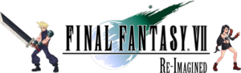

 FFVII ReImagined
Details
| Playtime | Not Played |
| Last Activity | Never |
| Added | 4/16/2022 10:07:49 |
| Modified | 5/3/2022 21:07:34 |
| Completion Status | $Check Out |
| Library | Playnite |
| Source | Wanderer |
| Platform | PC (Windows) |
| Release Date | 8/17/2015 |
| Community Score | |
| Critic Score | |
| User Score | |
| Genre | Platformer RPG |
| Developer | PD Design Studio |
| Publisher | |
| Feature | |
| Links | Official Site Fandom |
| Tag | [EMT] Logo Missing |
Description
|
Final Fantasy VII: Re-Imagined is a project made by fans of the original game. We re-imagined how the game would be like if it's an action game. Classic 2D Side-scrollers, such as Dragons and Dungeons: Chronicles of Mystara, Streets of Rage, etc, came to our minds. We thought about how we can incorporate some of the FFVII game play elements, such as Materia and summoning of Guardian Force into a Hack and Slash genre. The result is what you can see above. This is a short 1 playable level demo. You get to play as Cloud or Tifa, or co-op locally (you will need at least 1 controller to go with your keyboard). Barret works as a fire support for you. He's on a timed recharged system. You can only call for him when there is at least 1 blue bar. The green gem in the game allows you to summon your Guardian Forces. You charged it up by inflicting damage on enemies. For simplicity sake, Cloud is equipped with Ifrit by default, and Tifa with Shiva. Rightfully, if this is a fully developed game, players will be able to equip their Guardian Forces as they acquired them in the game. As for Materia system, we built it into the players' attack. Ideally, they should be collected as players progress in the game. Again for simplicity purposes, both Cloud and Tifa comes pre-equipped with Fire, Ice and Lightning. At the end of a 4 hit combo, the Materia will be effected. Ice will freeze the enemies for X seconds for players to continue hitting them. And when the freeze ends, an extra damage is dealt to the enemies. Certain enemies are immuned. Fire Materia creates a fire ball that moves slowly to hit enemies along its path. An explosion at the end deals extra damage. Lightning Materia stuns the enemies. Any other enemies that comes into contact with an electrocuted enemy will get electrocuted as well, somewhat like a domino effect, but with a "taper off" to prevent abuse. Unfortunately, this feature is not fully developed for this demo. We may update in future if we come around doing it. In the spirit of any RPG games, these Materia can be upgraded. Players accumulate experience points and can choose to upgrade various stats, such as Materia Levels, number of Summon Gems and Fire Support Bars, and even the playable character move sets.
|

Move List
|
|
Light Attack x 4 Heavy Attack x 4 Jump + Light Attack x 4 Jump + Heavy Attack Jump > Down + Heavy Attack |
Up + Heavy Attack |
|
Known Bugs |